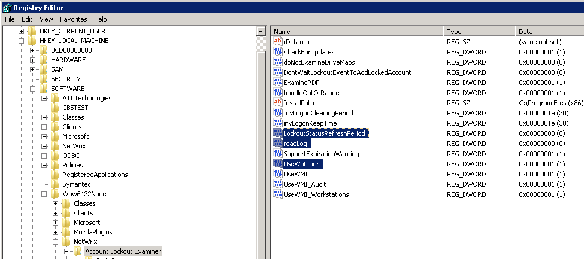

Account Lockout Examiner Service causes high CPU spikes and uses up a large percent of
memory. What can I do?

In order to reduce CPU load and memory usage, perform the following steps:
- Open the Registry Editor (navigate to Start --> Run and type regedit).
- Navigate to HKEY_LOCAL_MACHINESOFTWARE[Wow6432Node]NetWrixAccount Lockout Examiner (Wow6432Node only for x64 OS)
- Locate the Readlog key and set its value to 0.
- Create a new key called UseWatcher, set its type to DWORD and value to 1.
- Restart the NetWrix Account Lockout Examiner service via Services.msc
If this does not help, set the LockoutStatusRefreshPeriod key value to
0, but in this case the Account Lockout Examiner will not verify accounts status via
Active Directory, so account lockouts will not be reported if a corresponding event is
not found in the event log.